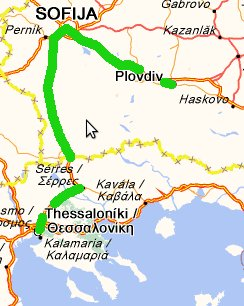

Европамоят континент
Автомобил: 26819 km
Влак: 3972 km
Кораб: 928 km
Общо: 61134 km
Градове: 52
Държави: 20
Континенти: 2
Лято на Регати
В гимназията тренирах академично гребане. След усилени тренировки, дойде време за състезанията. Участвахме на четворка без кормчия (4-) и на осморка със кормчия (8+). Годината беше 1994. Завърших девети клас предсрочно с петнадесет дни за да отидем от 15-ти юни на тренировъчен лагер на гребания канал в Пловдив. Пътувахме с едно бусче натоварено с лодките отгоре. Спомням си, че бая стърчаха, но шофьора караше бавно. Бяхме интересна гледка, жалко че нямам снимки. Републиканското беше началото на юли и преди него направихме двайсе дни тренировъчен цикъл – в началото много натоварване, а преди старта само техника. Тренирахме от сутринта до към пет – шест следобед и не ни оставаха сили и време да разгледаме града. Все пак успяхме да се разходим в двата полудена, който имахме. Хареса ни главната улица и многото красиви пловдивчанки, които се разхождаха безцелно по нея.

Гребният канал
Когато дойде денят на старта, всички бяхме леко притеснени, все пак цяла година тренировки щяха да намерят смисъла си в този ден и час. Наредихме се и Старт! В началото темпото е много високо първите 250 метра, като всяка лодка гледа да вземе водачеството за да контролира гонката. Ние като фаворити бяхме в средните коридори. След първите 200 метра вече водихме , като само лодката на Тракия Пловдив беше близо до нас. Успокоихме темпото като правехме дълги загребвания в по – голям интервал. Последните 500 метра тракийците се активизираха и показаха че не са се отказали. Все пак не успяха, ние контролирахме състезанието и успяхме да намерим сили да задържим преднината си. На финала голямата радост беше за нас. След тази победа, още същия ден ни предстоеше старт и на осморка. Двете четворки – нашата и втората в отбора, съставяха екипажа, заедно с момичето на рула, което тежеше около 40 килограма, та се наложи да добавим метални дискове за да компенсираме тежестта по регламент. След старта, въпреки очакванията ни нещата хич не бяха лесни. Лодката на Спартак Плевен ни поведе с малко и ¾ от дистанцията не можехме да ги настигнем. Накрая след пълна мобилизация успяхме да ги изравним и финал. След фотофиниш победители се оказахме ние. Последва голяма радост и чувство на удовлетвореност. Ежедневните тренировки на езерото Панчарево си казаха думата.

Двата златни медала Пловдив 1994
След успеха ни на Републиканското заслужено заминахме на регата в Солун. Участието на международно състезание винаги е вълнуващо и интересно. Имаше отбори от Сърбия, Турция, Румъния и разбира се домакините от Гърция. Това беше първото ми пътуване в Гърция, а и в така наречения Западен свят. Разбираемо изживяването беше изключително. Пътувахме със същото натоварено с лодки отгоре автобусче, само дето пътя беше доста по дълъг. Бавничко стигнахме Солун и веднага разтоварихме лодките в базата, където щеше да се проведе състезанието. Интересното бе, че регатата се провеждаше не в езеро а в Солунския залив, което е малко необичайно за академичното гребане.

С бяло е обозначена дистанцията
Заради многото отбори се наложи да има полуфинали. Едвам се класирахме за финал с последно време. Все пак имахме малък инцидент – слайда на човека от моя борд излезе от релсите и загубихме малко тяга докато си го оправи. Вълните ни пречеха и може би това оказа негативно влияние на нашето представяне. Все пак се класирахме за финала на другия ден. А на финала победихме. Неочаквано но без притеснения и напрежение и без вълни – морето беше като езеро, победихме с голяма преднина. Радостта ни беше голяма и с удоволствие се почерпихме на вечерята дадена от организаторите в луксозния хотел, в който бяхме настанени. Гърците се бяха постарали и предложиха огромно разнообразие от риби и морски дарове, както и прекрасно бяло вино.

Солун 1994
На другия ден разгледахме Солун. Хареса ни естествено, но цените по магазините малко ни стреснаха. Ходихме и на плаж на Егейско море, даже се окъпахме и веднага разбрахме колко по – солено е от нашето Черно море. Натоварихме лодките и на сутринта потеглихме за София. С „гребния керван“ сме изминали 882 километра по маршрут София – Пловдив – София – Солун – София. Беше забавно и приятно пътуване, особено по пътя за вкъщи.

София - Пловдив - Солун